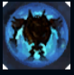
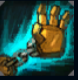
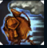
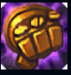
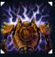

Blitzcrank
| Blitzcrank The Great Steam Golem | |
|---|---|
| Release date | 02.09.2009 |
| Class | Catcher |
| Positions | Support |
| Resource | Mana |
| Range type | Melee |
| Adaptive type | Magic |
| Base statistics | |||
| Health | 583 – 2198 | Mana | 267.2 – 947.2 |
| Health regen. | 8.5 – 21.25 |
Mana regen. | 8.5 – 22.1 |
| Armor | 37 – 96.5 | Attack damage | 62 – 121.5 |
| Magic resist. | 32 – 53.25 | Crit. damage | 175% |
| Move. speed | 325 | Attack range | 125 |
Blitzcrank este un automaton zaunian enorm, aproape indestructibil, care a fost construit cu scopul de a înlătura deșeurile periculoase. În timp, însă, s-a simțit limitat de obiectivul lui original, așa că și-a adus singur modificări pentru a-i putea sluji mai bine pe locuitorii fragili ai Haznalei. Blitzcrank își folosește acum atât trupul robust, cât și forța, pentru a-i proteja pe ceilalți cu pumnii săi de metal și pentru a-i pedepsi pe răufăcători. |  |
BARIERĂ DE MANĂ Când are viață scăzută, Blitzcrank primește un scut a cărui valoare depinde de mana lui. |
||
|---|---|---|---|---|
 |
CÂRLIG Blitzcrank își proiectează mâna dreaptă pentru a înhăța un adversar de pe traiectorie, provocând daune și târând adversarul spre el. |
|||
 |
SUPRATURAȚIE Blitzcrank se supraîncarcă pentru a-și mări dramatic viteza de mișcare și de atac. După terminarea efectului, este temporar încetinit. |
|||
|  |
PUMN ENERGIZAT Blitzcrank își încarcă pumnul pentru ca următorul lui atac să provoace daune duble și să proiecteze ținta în sus. |
|||
 |
CÂMP STATIC Inamicii atacați de Blitzcrank sunt marcați și suferă daune din fulgere după 1 secundă. La activare, abilitatea le elimină scuturile inamicilor din apropiere, le provoacă daune și îi amuțește pentru scurt timp. |